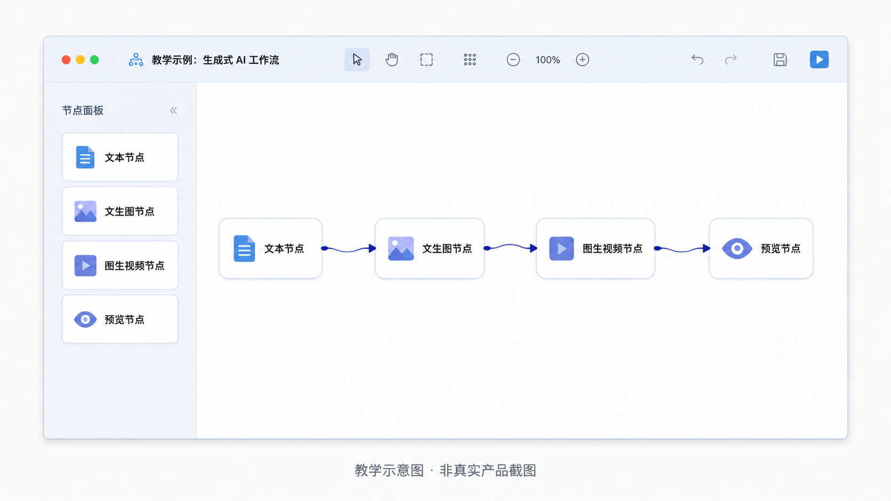
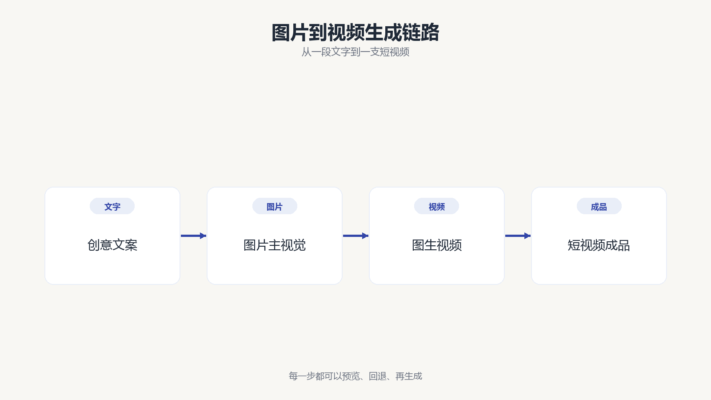
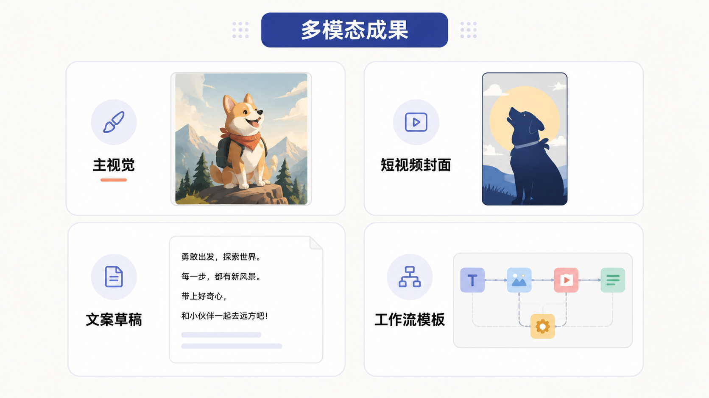

第 8 节
从文字到图片和视频的生成工作流
本节目标
让学生理解多模态生成的基本路径，并学会用工作流思维组织创作。
建议时长：13 分钟
前面我们已经把文字相关的部分讲了很多，现在开始把视野扩展到多模态生成。很多人第一次接触 AIGC，会被“文生图”“图生图”“文生视频”“图生视频”这些词弄得有点乱。其实只要抓住一条基本思路，就不会迷路：你先用文字把创意说清楚，然后逐步把它变成一张图，再把图变成一个会动的短视频。工作流的价值，就在于把这些步骤串起来。

工作流这个词，大家可以把它想成一条可重复的生产线。我们并不是每次都从零开始生成，而是把常用步骤固定下来。比如先写一段创意文案，再用文生图节点生成主视觉，再把主视觉送进图生视频节点，最后得到一个短视频结果。这样一来，你不仅能看见每一步在做什么，也能在中间任何一步修改内容，再重新跑一次。
flowchart LR
A[创意文案] --> B[文生图]
B --> C[图生视频]
C --> D[短视频成果]
B --> E[图生图微调]
E --> C
这节课里我们会用 Agnes Workbench 这样的可视化工作台做示意。你可以把它理解成“把底层生成能力做成了一个更容易看懂、更容易串联的操作面板”。对于初学者来说，这种界面特别友好，因为你不必一开始就碰复杂代码，也能看懂一条多步骤任务的执行逻辑。
更重要的是，工作流会帮助学生建立一个很成熟的习惯：不要只盯着最终结果，要学会管理生成过程。 当你觉得一张图不理想时，不是马上推翻全部，而是先想问题出在哪一层。是文字描述不够具体，还是图片主视觉不够稳定，或者视频镜头运动不够自然？有了工作流，你的修改就会更有方向。

屏幕演示建议
正式录制时，这一节建议以“简单完整”为原则。先展示一个文本节点，输入一句明确的主视觉描述；接着连到文生图节点，得到一张课程主视觉；然后再把这张图送到图生视频节点，生成一个简短视频。你可以提前准备好已成功生成的结果，以免现场等待过长。演示的重点不是追求视觉大片，而是让学生看懂每一步如何衔接。
本节跟做
请学生试着为“豆懂 AI 动物英语微课”写一句课程主视觉描述。要求写清楚主体、场景、风格和用途。比如说，这是一套给小学生看的微课，所以画面要亲切、明亮、知识感强，不宜做得过于赛博或冷硬。写完之后，可以让他们互相听一听，判断哪一句更容易转成稳定的图像。
本节小结
请记住这一句：多模态生成不是“随便点一下出图”，而是把创意、图片和视频串成一条可复用的工作流。 下一节，我们继续往前，把口播稿、语音、数字人和互动网页连成最终成品。